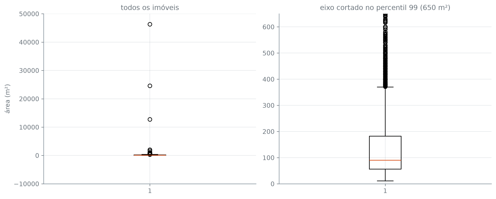

alugueis = pd.read_csv("dados/alugueis.csv", na_values=["-"])
alugueis.shape(10692, 13)A seção anterior fechou com aluguel já corretamente tipado como int64 e, mesmo assim, escondendo um imóvel isolado a R$ 45.000 — um problema que não é mais de tipo, mas do que os valores contêm. andar é o próximo caso, e não é bem o mesmo problema: o marcador "-" já virou nulo com na_values, então a coluna está tipada; o que falta decidir é o que fazer com esses nulos, com as linhas repetidas que ainda não foram olhadas, e com os valores extremos que describe() revela.
Com andar já tipado, isna().sum() mostra o que sobrou:
Só andar, com 2.461 nulos — o mesmo número que a seção anterior contou como traços. Nenhuma outra coluna do arquivo tem valor faltando.
O reflexo depois de ver uma coluna com nulo é dropna(). Antes de aplicá-lo, vale perguntar o que esse nulo está dizendo — e a própria tabela responde, se for comparada consigo mesma. condominio e area_m2 entre as linhas em que andar é nulo e as linhas em que não é:
| condominio | area_m2 | |
|---|---|---|
| andar | ||
| False | 750.0 | 80.0 |
| True | 0.0 | 190.0 |
Nas linhas com andar nulo, a mediana de condominio é 0 e a de area_m2 é 190 m². Nas linhas com andar preenchido, a mediana de condominio sobe para 750 e a de area_m2 cai para 80 m². A proporção de imóveis sem condomínio nenhum aprofunda o mesmo padrão:
(np.float64(84.4), np.float64(3.6))84,4% das linhas com andar nulo têm condominio igual a zero, contra 3,6% das linhas com andar preenchido. Um imóvel sem condomínio e maior que a mediana é o perfil de uma casa, não de um apartamento. O arquivo não traz uma coluna de tipo de imóvel — o que ele traz é esse padrão, repetido em duas variáveis diferentes, e é ele, não uma afirmação de cabeça, que sustenta a leitura de que andar nulo aqui não é o dado faltando: é o imóvel não ter andar, porque é uma casa. Vale a ressalva: isso é evidência forte, não prova — ninguém confere linha por linha se cada uma dessas 2.461 é mesmo uma casa. É a mesma leitura que se faz de qualquer dado sem rótulo direto: somar sinais indiretos até que só uma explicação os explique todos ao mesmo tempo.
Isso muda a decisão. Descartar essas 2.461 linhas jogaria fora informação que não estava ausente — o imóvel existe, o aluguel existe, só o andar não faz sentido para ele. Preencher com 0 é a escolha coerente com o que o dado significa: 0 é o andar de quem não tem andar, o térreo, que é exatamente o que uma casa é.
((10692, 13), (8231, 13), (10692, 13))dropna() sai de 10.692 para 8.231 linhas — 23% da tabela, por uma coluna em que o nulo nunca foi ausência. fillna({"andar": 0}) mantém as 10.692 e escreve, em número, a mesma coisa que o traço já dizia em texto. É essa a versão que fica:
dropna() e fillna() não são um mecânico melhor que o outro — são duas respostas a perguntas diferentes sobre o que o nulo significa. dropna() presume que a linha está incompleta e que o certo é não contar com ela. fillna(valor) presume que o nulo é, ele mesmo, informação, e escolhe o número que a representa. A segunda presunção só se sustenta quando alguém conhece o domínio dos dados o bastante para saber que “sem andar” e “casa” são a mesma coisa — o pandas não tem como adivinhar isso sozinho, e a linha fillna({"andar": 0}) é, por si só, muda sobre o motivo.
358 linhas repetem, em todas as 13 colunas, uma linha que já apareceu antes. Contando também as primeiras ocorrências de cada grupo repetido, e como esses grupos se distribuem por tamanho:
repetidos = alugueis[alugueis.duplicated(keep=False)]
tamanhos = repetidos.groupby(list(alugueis.columns), dropna=False).size()
print("linhas repetidas:", len(repetidos))
print("grupos:", len(tamanhos))
print("pares:", (tamanhos == 2).sum())
print("de três ou mais:", (tamanhos >= 3).sum(), "grupos,", tamanhos[tamanhos >= 3].sum(), "linhas")
print("maior grupo:", tamanhos.max())linhas repetidas: 604
grupos: 246
pares: 206
de três ou mais: 40 grupos, 192 linhas
maior grupo: 22Dos 246 grupos, 206 são pares. Os outros 40 têm de três a 22 cópias, e são esses 40 grupos, sozinhos, que respondem pelas 192 linhas que sobram das 604. O maior — 22 anúncios idênticos em todas as 13 colunas — leva ao extremo a mesma pergunta que qualquer duplicata levanta: é um imóvel (ou um anúncio) republicado vinte e duas vezes, ou vinte e dois apartamentos realmente iguais? A tabela não traz o que decidiria entre as duas. Um exemplo, de um grupo menor:
| cidade | area_m2 | quartos | banheiros | vagas | andar | aceita_animal | mobiliado | condominio | aluguel | iptu | seguro_incendio | total | |
|---|---|---|---|---|---|---|---|---|---|---|---|---|---|
| 340 | Belo Horizonte | 15 | 1 | 1 | 0 | 3.0 | não | sim | 0 | 1100 | 0 | 15 | 1115 |
| 4384 | Belo Horizonte | 15 | 1 | 1 | 0 | 3.0 | não | sim | 0 | 1100 | 0 | 15 | 1115 |
| 10425 | Belo Horizonte | 15 | 1 | 1 | 0 | 3.0 | não | sim | 0 | 1100 | 0 | 15 | 1115 |
Três anúncios de Belo Horizonte, 15 m², um quarto, idênticos até o último real de condomínio e seguro-incêndio.
Uma linha repetida pode ser duas coisas bem diferentes: o mesmo imóvel anunciado mais de uma vez — pela imobiliária e pelo dono, ou reenviado depois de expirar —, ou dois apartamentos realmente iguais, no mesmo prédio, com a mesma planta e o mesmo condomínio. A tabela não guarda um identificador de anúncio nem um endereço, e sem isso não há como distinguir as duas situações a partir do que está nela. Remover as duplicatas presumiria a primeira explicação; mantê-las presumiria a segunda. Nenhuma das duas é sustentada pelo dado disponível — e é por isso que esta seção não decide: alugueis segue com as 10.692 linhas, duplicadas incluídas.
| area_m2 | condominio | |
|---|---|---|
| count | 10692.000000 | 1.069200e+04 |
| mean | 149.217920 | 1.174022e+03 |
| std | 537.016942 | 1.559231e+04 |
| min | 11.000000 | 0.000000e+00 |
| 25% | 56.000000 | 1.700000e+02 |
| 50% | 90.000000 | 5.600000e+02 |
| 75% | 182.000000 | 1.237500e+03 |
| max | 46335.000000 | 1.117000e+06 |
Em area_m2, a mediana é 90 m² contra um máximo de 46.335 m². Em condominio, a mediana é R$ 560 contra um máximo de R$ 1.117.000. Como razão entre máximo e mediana:
(515, 1995)O máximo de area_m2 é 515 vezes a mediana da própria coluna; o de condominio, 1.995 vezes. E o topo de area_m2 não é um ponto isolado — os cinco maiores:
46.335, 24.606 e 12.732 m² são os três imóveis acima de dez mil metros quadrados. O quarto e o quinto maior já caem bem abaixo disso — e empatam entre si, os dois em exatos 2.000 m². Em condominio, o maior valor não é um ponto isolado no outro sentido: ele se repete.
| cidade | area_m2 | quartos | banheiros | vagas | andar | aceita_animal | mobiliado | condominio | aluguel | iptu | seguro_incendio | total | |
|---|---|---|---|---|---|---|---|---|---|---|---|---|---|
| 255 | Belo Horizonte | 155 | 1 | 4 | 0 | 4.0 | não | não | 1117000 | 2790 | 64 | 38 | 1120000 |
| 6979 | Belo Horizonte | 155 | 1 | 4 | 0 | 4.0 | não | não | 1117000 | 2790 | 64 | 38 | 1120000 |
As duas linhas com condomínio de R$ 1.117.000 são o mesmo par que a seção de duplicatas já contou: mesma cidade, mesma área, mesmo aluguel, tudo igual — um imóvel (ou um anúncio) registrado duas vezes, não dois imóveis diferentes que coincidem em ter condomínio alto.
Noventa e nove por cento dos imóveis têm até 650 m².
fig, axs = plt.subplots(1, 2, figsize=(11, 4.5))
axs[0].boxplot(alugueis["area_m2"])
axs[0].set_title("todos os imóveis")
axs[0].set_ylabel("área (m²)")
axs[1].boxplot(alugueis["area_m2"])
axs[1].set_ylim(0, p99_area)
axs[1].set_title(f"eixo cortado no percentil 99 ({p99_area} m²)")
plt.tight_layout()
plt.show()
À esquerda, a caixa inteira do boxplot — onde mora metade dos imóveis — vira uma linha reta colada no zero: os imóveis de 46.335, 24.606 e 12.732 m² esticam o eixo inteiro para caber. À direita, com o eixo cortado em 650 m², a caixa aparece, e são esses mesmos imóveis — e outros acima do corte — que ficam fora do que o gráfico mostra.
Nenhuma dessas linhas sai da tabela. O imóvel de 46.335 m² e o condomínio de R$ 1.117.000 continuam em alugueis até o fim desta seção e da próxima: são o motivo pelo qual a seção seguinte, ao resumir valores por cidade, prefere a mediana à média — um valor deste tamanho desloca uma média inteira, e a mediana não se importa com ele.
count 10692.000000
mean 33.426097
std 22.831340
min 0.125668
25% 18.571429
50% 26.666667
75% 40.714286
max 300.000000
Name: aluguel_por_m2, dtype: float64aluguel_por_m2 divide, linha a linha, o aluguel pela área — uma conta que o arquivo não trazia pronta, e que agora é só mais uma coluna de alugueis. Ela também mostra o efeito de um outlier de área por um ângulo diferente: qual é o imóvel do menor valor da coluna, e de onde vem esse valor:
(np.float64(0.13), 12732)R$ 0,13 por metro quadrado — não porque o aluguel seja baixo, mas porque a área é 12.732 m², um dos três imóveis extremos já vistos, grande o bastante para que qualquer aluguel divida em quase nada. É essa coluna que a próxima seção compara entre as cinco cidades.